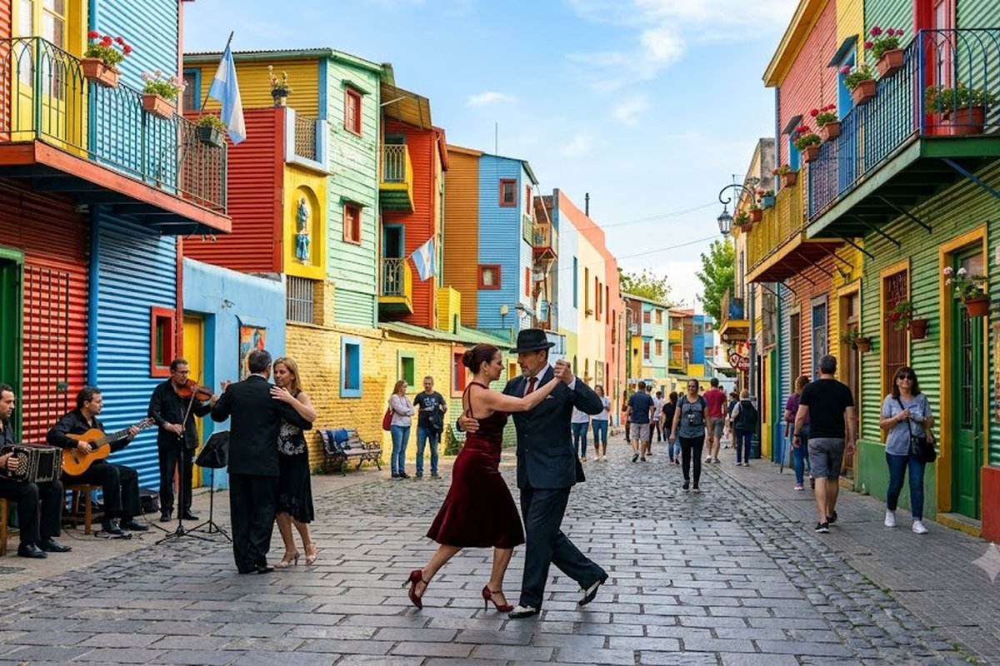
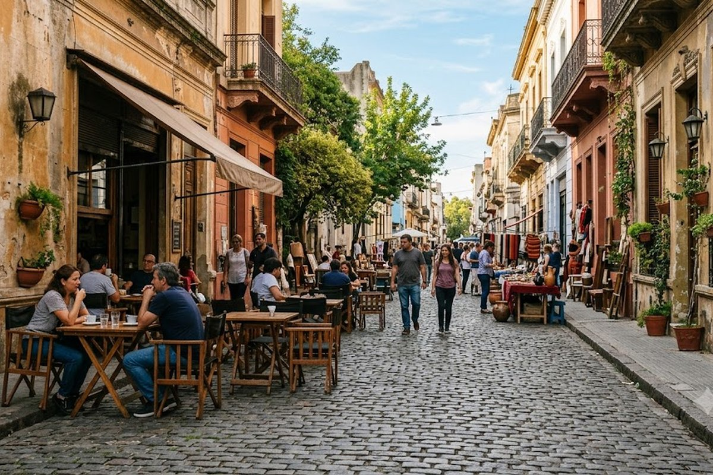
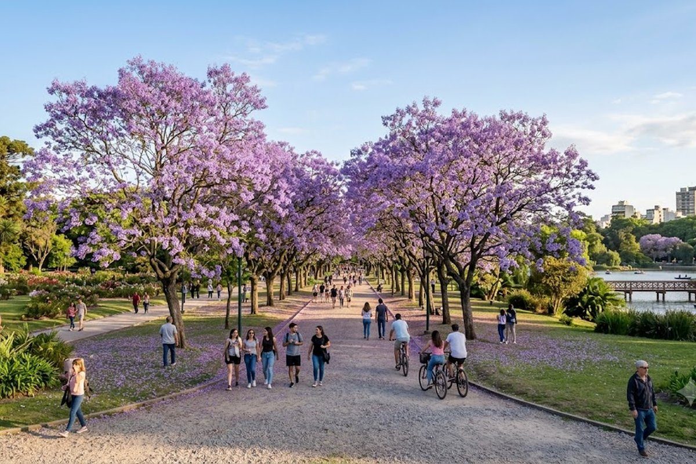

La ciudad que nunca duerme. Tango, gastronomía de clase mundial, museos, teatros y barrios que son mundos aparte. Cada visita descubre algo nuevo.
Buenos Aires es la ciudad que más te sorprende cuando creés que ya la conocés. Capital con más teatros per cápita del mundo, una escena gastronómica que compite con las mejores de Europa, mercados de pulgas donde encontrás antigüedades únicas, y barrios tan distintos entre sí que parecen ciudades dentro de la ciudad. San Telmo, Palermo, La Boca, Recoleta, San Nicolás — cada uno tiene su propio ritmo, su propia luz y su propia razón para quedarse.


El barrio más antiguo de Buenos Aires. Mercado de San Telmo, milongas tradicionales, antigüedades y el tango en su cuna original.
El barrio de colores, el Estadio de Boca Juniors y el conventillo más fotografiado de Argentina. Llegá a la mañana para evitar las multitudes.
Palermo Soho (diseño y gastronomía), Palermo Hollywood (bares y restós), el Jardín Botánico y el Rosedal del Parque Tres de Febrero.
El cementerio más famoso del mundo, donde descansa Evita. El barrio más europeo de BA, con cafés históricos y el Museo de Bellas Artes (gratis).
Buenos Aires tiene más teatros que Londres o Nueva York. El Colón es uno de los 5 mejores del mundo. Las obras del circuito Corrientes son de primer nivel.
La mejor carne del mundo, heladerías artesanales, cafés históricos (Tortoni, Las Violetas) y una nueva gastronomía de autor que explota en Palermo y San Telmo.
Buenos Aires tiene el mejor teatro en español del mundo y las entradas son increíblemente baratas comparadas con cualquier capital europea. Buscá la cartelera de Avenida Corrientes antes de viajar y reservá — ver una obra en el circuito porteño es una de las experiencias culturales más subestimadas por los turistas del interior. Y para la parrilla: evitá las que tienen foto del menú en inglés en la puerta, son para turistas. Preguntale al hotel dónde come la gente del barrio.
Desde el interior: Buenos Aires funciona perfecto como punto de inicio o cierre de cualquier viaje. Llegar 2 días antes a Buenos Aires y arrancar desde acá hacia Bariloche, Iguazú o cualquier destino es la secuencia más eficiente para los que vienen de otras provincias.
¿Qué tiene de turístico CABA para alguien que ya vivió ahí o la conoce?
Muchísimo que no viste. La escena gastronómica porteña cambia constantemente — los mejores restós de los últimos 3 años probablemente no existían la última vez que fuiste. El circuito de galerías de arte contemporáneo en San Telmo y Palermo, los mercados de diseño y las milongas de tango para turistas vs las milongas "de verdad" son mundos completamente distintos.
¿Cuántos días son suficientes?
Para un primer viaje, 3-4 días es el mínimo para ver los barrios principales. Con 5-6 días podés entrar en los detalles: un día en el Tigre, una noche en el Teatro Colón, el mercado de Mataderos los domingos.
¿Qué barrios no se pueden perder?
San Telmo (historia y tango), La Boca (color e identidad porteña), Palermo (gastronomía y diseño), Recoleta (cultura y arquitectura europea) y Puerto Madero (modernidad). En ese orden, del más auténtico al más nuevo.
¿Es segura para turistas?
Como cualquier capital latinoamericana, hay zonas de más y menos cuidado. Los barrios turísticos son seguros de día. De noche en Palermo, San Telmo y Puerto Madero no hay problema. Evitá mostrar el celular de manera ostentosa en transportes y zonas concurridas.
Armamos tu escapada a la ciudad con hotel, traslados y recomendaciones.
💬 Consultar con Gemicheck